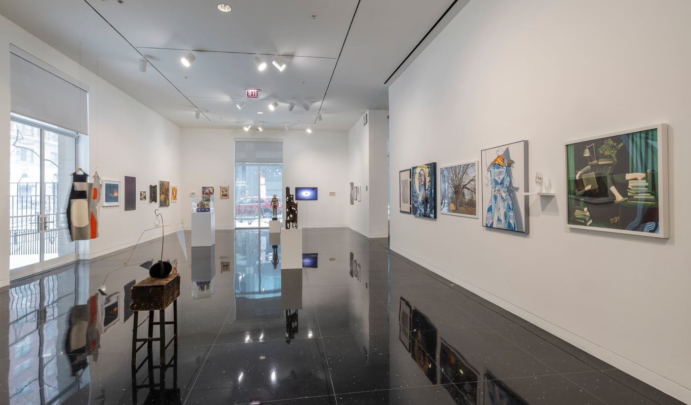
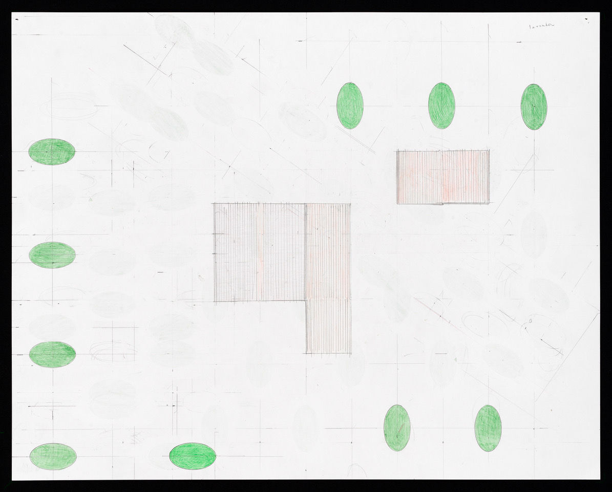
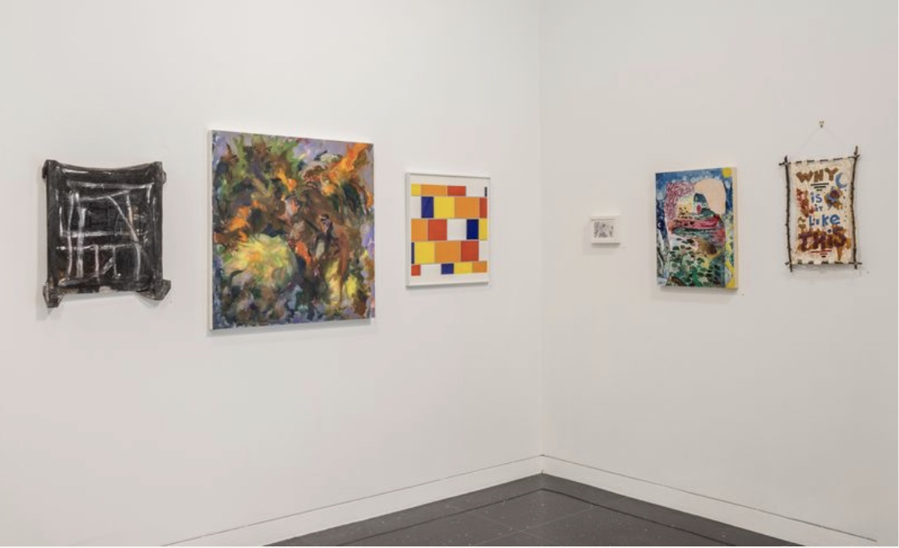

It’s not too late to tour the current exhibition of works by 84 Professional Visual Artist Members of the Arts Club of Chicago at 201 East Ontario. Executive Director Janine Mileaf and photographer Michael Tropea show and tell why you should stop by before it closes March 7.

Richard Rezac, whose works are in museum collections across the country and who has had 32 solo exhibitions since 2000, is one of the show’s noted artists. Among the members who have exhibited have been Julia Thecla, Ivan Albright, Martyl Langsdorf, and more recently Christopher Williams, Julia Fish, Jessica Stockholder, and Gaylen Gerber.

Mileaf told us:
“The Arts Club was founded in 1916 and our second exhibition ever was a Members Exhibition. At first, it was an annual show, but for the past few decades at least, it has been a biennial. This is our 92nd exhibition. We were honored last time to have a work by Richard Hunt that he submitted just before he passed away. He had exhibited in the Members show for decades. A few years ago, we had a lecture about the 20th-century illustrator Peggy Burrows and we got to see her fabulous rendition of artists arriving at the old building with paintings in hand.
“The way the exhibition works is that we accept one work of restricted dimensions from every Professional Visual Artist Member of the Arts Club. We do not judge the works or group them by theme. They are hung alphabetically. The remarkable thing, however, is that there often ends up being unintended correspondences from one work to the next. While we don’t vet the works that our artist members submit, we do vet the applicants who apply as artists to make sure that they have an exhibition and critical history. Though there are many talented amateur artists who are members, this category is for people whose primary professional identity is that of artist. In recent years as the Member Exhibition has become more popular, we have worked with the Membership Committee to raise the bar on entry without compromising transparency and access.”
Mileaf explained that the Arts Club from its beginnings has public engagement in its mission.
“The Arts Club of Chicago was founded precisely to bring vanguard arts to the city. In the wake of backlash against the 1913 Armory exhibition, some of the city’s arts leaders came together to encourage conversation around challenging arts and ideas. This was always meant to be an engagement with the public, as well as our members. We imagine The Arts Club as a hub for critical thought that inspires understanding.”
“We’re also very proud to include the fellows of The Arts Club Chicago in the exhibition. This is a program we began about ten years ago to support recent MFA graduates and keep them connected to the city. Recently, the Holly Palmer Foundation has helped to expand the scope of the fellowships we offer. It is a thrill to see our newest members on the walls with someone like Helen Harvey Mills, who has been exhibiting in the Members exhibition since the 1970s,” Mileaf said.
Keven Wilder, who has studios in both Chicago and Door County where she has a gallery as well, talked with us about exhibiting in the show.
“It’s an honor to participate in the Arts Club’s Visual Artist Members’ Exhibition! Artists whose work I admire like Julia Fish and Cameron Martin also have works hanging in this show. I’m in good company!
“I enjoy looking closely at all the pieces in the show. I learn so much from the other artists’ work. I get new ideas about experimenting with different techniques, media, colors, subject matter, etc. The Arts Club curatorial staff do a great job hanging the show too.
“When deciding what to submit, I think about what new painting will stand out on the wall. My entry this year ‘Ferns’ has a dramatic composition and strong colors. It’s a turbulent painting; these are turbulent times we’re living in.”
Wilder explained creating “Ferns”:
“It originated from a photo I took of a contemporary floral arrangement. The composition of the painting loosely followed the photo, but then I went to town playing with colors, different brush strokes making the painting come alive. Eventually, the painting took on a life of its own.”

Mileaf told us: “Each year that we host a Members Exhibition, I hear from the audience that this is the best exhibition yet. This year there has been a chorus of such praise.”
The Arts Club is open to the public Tuesday–Friday 11AM–6PM and Saturday 11AM–3PM. The Visual Artist Members’ Exhibition ends March 7.